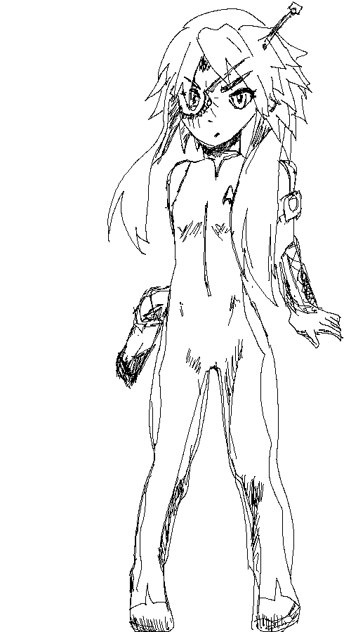

to main site...
git the source
Beautiful Animated Wallpaper in Emacs
[2017-11-06]
Webdriver.io Intro
[2017-05-25]
Javascript in 2017 Primer [Node, react, es6, webpack, babel]
[2017-02-06]
Benchmarking REST daemons/minimal web servers
[2016-10-08]
Creating a PHP 7 Extension
[2016-09-29]
Lisp Gamejam Postmortem
[2016-01-09]
Type Safety and Lack Thereof
[2015-07-10]
Writing a Common Lisp Web App in caveman2
[2015-07-07]
Creating animation with pencil2d and Image Magick
[2014-07-12]
New Sprites for Pseudo
[2013-11-29]
Pseudo, an almost 3d roguelike
[2013-11-06]
Gaming with a thin client on GNU/Linux at native FPS
[2013-08-22]
Ahungry Tactics Dev Blog
[2013-07-12]
Blogging with Emacs' org-mode
[2013-04-01]
 to main site...git the source
to main site...git the source